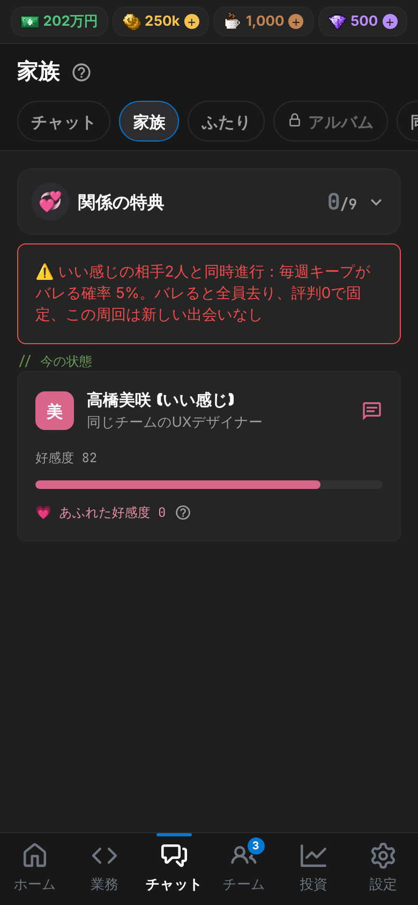
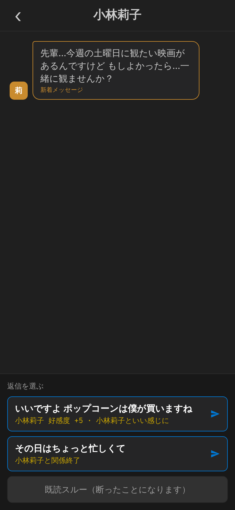
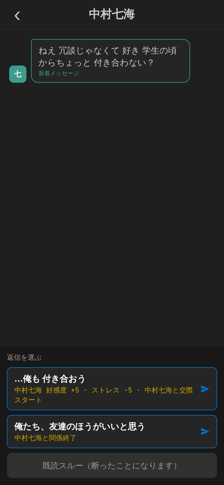
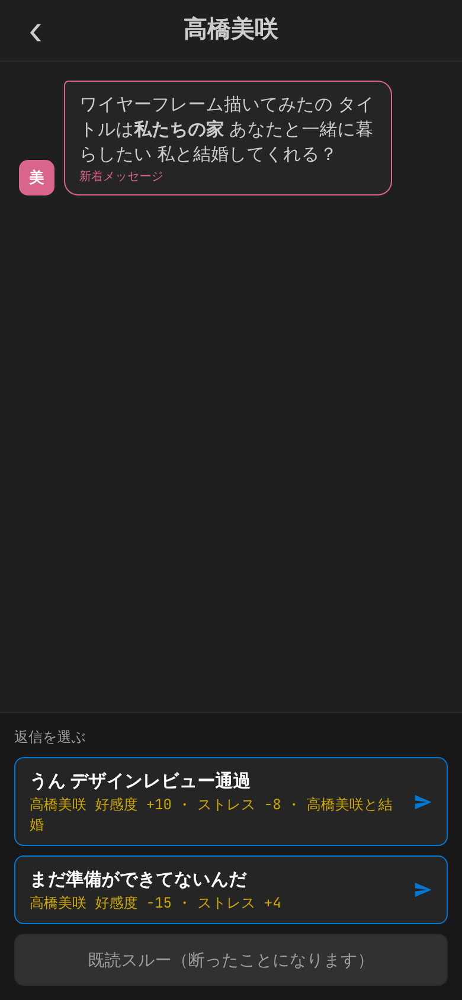

攻略本 › ヒロイン攻略
ヒロイン攻略
ヒロイン13人をひと目で比較、誰を選ぶか、すべてのヒロイン共通のルールのまとめまで。個別の攻略への入り口です
ひとことまとめ
- 💌 ヒロインは全部で13人です。日常ヒロイン6人（美咲、彩花、七海、莉子、優奈、葵）、称号ヒロイン4人（楓、穂乃果、美桜、真由）、会社ヒロイン3人（ソフィー、紗希、麗華）。
- 🔰 最初の周回なら美咲（第2週に向こうから話しかけてきます）。好みのエンディングまで安く行くなら七海、莉子、図鑑の報酬がいちばん強いのは優奈（神話の同僚）と麗華、楓（レジェンドパック）です。
- 🏠 同棲、新婚は9人だけ、子どもは楓、ソフィー、紗希、麗華の4人にはいません。選ぶ前に下の表を必ず見てください。
- 📌 ルールはほとんど同じです: 毎週のメッセージにあたたかい返信、既読スルー −15、交際中にデート0回の週 −30、結婚後に家事0回の週 −30。
誰から攻略する？ 目的別のおすすめ 🎯#
| こんな周回なら | おすすめのヒロイン | 理由 |
|---|---|---|
| 🔰 最初の周回、初めての結婚の練習 | 美咲 | 称号も装備もなしで第2週に向こうから連絡。同じチームなので転職さえしなければ大丈夫です |
| 🏠 同棲、新婚、好みのエンディングまで安く | 七海、莉子 | 夢の家が2,778万円、1,889万円（基準価格）で6人の中でいちばん安いです |
| 🔀 転職、起業ルートと一緒に | 七海、莉子、葵 | 大学のつながりなので、会社を移っても連絡が続きます |
| 🌈 図鑑の報酬が最高 | 優奈 | 結婚エンディングの報酬が神話等級の同僚1人。装備運命の出会い（1,500,000コイン）で第1週に出会えます |
| 👶 家族のエンディング（子ども、内助の功）集め | 優奈 | 結婚がいちばん早いので、子どもを大学まで育てる時間が残ります |
| 🚀 早く結婚 | ソフィー、紗希、麗華 | クイズ、メモ、秘密のデートのような固有システムをうまく扱えば早く仲良くなれます。そのかわり、その会社に入る必要があります |
| 🏷️ 称号の周回 | 楓（あしながおじさん）、穂乃果、美桜、真由（開発系インフルエンサー） | その称号を付けた周回にだけ登場します |
| 💪 時間がかかってもじっくり | 葵 | 片想い前の好感度がいちばんゆっくり上がります。彼氏がいるあいだの告白は落とし穴 |
13人をひと目で比較 🗂️#
出会い方と固有システム#
| ヒロイン | 出会い方 | 最初の連絡 | 固有システム、特徴 |
|---|---|---|---|
| 高橋美咲 🐈 同じチームのUXデザイナー | 最初の会社（大企業）にいれば誰でも | 第2週 | 会社の人: 片想い前に転職すると途切れます |
| 佐々木彩花 📊 隣のチームのサービスプランナー | 最初の会社（大企業） | 第3週 | 美咲と同じ会社の人ルール。夢の家が高いです（2.1億円） |
| 中村七海 🎮 大学の同期 | 大学のつながり（会社に関係なし） | 第4週 | 最初からタメ口。夢の家、好みの品が安いです |
| 小林莉子 🧪 大学の後輩 | 大学のつながり（会社に関係なし） | 第5週 | 片想い前の好感度が日常ヒロインの中でいちばん早く上がります |
| 松本優奈 🏋️ ピラティスのインストラクター | 1周回で運動500日、または装備運命の出会い | ジム | プロポーズの進み具合20（ほかのヒロインは60） |
| 山本葵 💌 7年の片想い | 大学のつながり（会社に関係なし） | 第6週 | 最初は彼氏がいます。私、別れたのメッセージの正解は1つだけ |
| 井上楓 📚 試験勉強中の友達 | 称号あしながおじさん | 称号の周回 | お金のメッセージ（勉強の進み具合）vs 心のメッセージ（好感度）。プロポーズに333万円 |
| 穂乃果 🐞 登録者第1号 | 称号開発系インフルエンサー + 第2週に最初の動画をアップ | 第2週〜 | 称号ストーリーの答えしだいで、登録者3人が一緒に終わります |
| 美桜 🧚 ブートキャンプの受講生 | 称号開発系インフルエンサー + 登録者1万人 | 第8週〜 | 片想いの段階で好感度が登録者の中でいちばんゆっくり上がります |
| 真由 🌙 別の会社のシニア開発者 | 称号開発系インフルエンサー + 第14週〜スポンサーを受ける必要あり | 第14週〜 | スポンサーを断ると真由は終わり |
| ソフィー 🌎 外資系の隣のチームのPM | 外資系、グローバルテック支社に入社（第16週〜、ビジネス英語 + コーディング力90） | 入社最初の週 | 好感度は2週ごとに来る韓国語クイズと日常のセリフだけ |
| 早瀬紗希 🤫 スタートアップの自分のチームのリーダー | スタートアップ、ピボットラボに入社（第12週〜、コーディング力90） | 入社最初の週 | 秘密の交際: 同僚3人の疑惑度のどれか1つでも100になるとバレます |
| 氷室麗華 🔍 朝コミットの監査官 | 朝コミットの中途採用（第20週〜、スタートアップ、フリーランス、外資系からだけ提案） | 入社最初の週 | 疑惑度80からスタート。監査メモ（間違った行を探す）だけで好感度。在職中に疑惑度100で懲戒解雇 |
できること、結婚エンディングの報酬#
難易度の星はこの攻略本の体感値です（かかる週、条件の数、ミス1回の重さでつけました）。同棲、新婚、子どもの段階ごとの詳しい表は同棲、新婚、家族にあります。
すべてのヒロイン共通ルールのまとめ 📌#
ヒロインごとにセリフと好感度の上がる速さは違っても、骨組みは同じです。片想い前と片想いの段階では好感度がゆっくり上がり、交際からは返信に書かれたとおりに上がります。毎週守ることと、あふれた好感度の効果の表はすべてのヒロイン共通ルールにあります。
- 出会い → 片想いの誘い（好感度80）片想いの前は好感度が80で止まります。80になった週に片想いの誘いのメッセージが来るので、必ず受けましょう。断ったり既読スルーしたりすると、そのヒロインは去っていきます。
- 片想い → 告白（好感度100）告白を断ったり既読スルーしたりすると去っていき、その周回では新しい出会いがロックされます。
- 交際 → プロポーズ（デートの進み具合60 + 好感度100）進み具合はデートでしか貯まりません（優奈だけ進み具合20）。プロポーズを断ると −15で、二度と来ません。
- 結婚 → 第100週結婚、交際のエンディングは、第100週にその状態でいることで記録されます。途中で別れたり離婚したりすると無効です。
新しい出会いがロックされる場合
片想いの誘いを断ると、そのヒロインとの縁だけが終わり、ほかのヒロインとはそのまま出会えます。でも片想いになったあとで告白を断ったり、付き合っていて別れたり、離婚したりすると、その周回では新しい出会いが生まれません。




| 毎週守ること | 守らないと |
|---|---|
| メッセージに返信する | 既読スルー −15（通知を消すのも既読スルー） |
| 交際中はデート1回以上 | 0回の週は −30 + 寂しい |
| 結婚後は家事1回以上（子どもがいれば育児も） | それぞれ0回の週は −30。好感度0で離婚しよう（引き止め30%） |
| 週末は業務のかわりに休憩、デート | 彼女、妻 −2 |
| 片想いは1人だけ | 片想い2人以上 + 恋人なしだと、毎週キープがバレる確率（2人で5%、3人で8%、そのあと1人ごとに +5%） |
落とし穴: 会社ヒロインは会社を離れたら終わり
美咲、彩花は最初の会社、ソフィーは外資系、紗希はスタートアップ、麗華は朝コミットの人です。片想いの前にその会社を辞めると連絡が途切れます（紗希は片想い以上でもスタートアップを離れたら終わり）。七海、莉子、葵は大学のつながりなので、会社とは関係ありません。
何人も同時に？
何人もと片想いを積んでおくキープのエンディングもあります。バレるとみんな去っていき評判が0に固定されるので、装備良心の呵責が事実上必須です。詳しくはエンディング図鑑のキープのエンディングと装備を見てください。
よくある質問#
- 1周回で何人ものヒロインと結婚できますか？
- いいえ。誰かと付き合い始めると、ほかの片想いはすべて終わります。周回ごとに1人ずつ攻略するのが基本です。
- 称号ヒロインはなぜ出てこないの？
- 楓は称号あしながおじさん、穂乃果、美桜、真由は開発系インフルエンサーをその周回で装着しないと出てきません。称号の開き方は称号にあります。
- ソフィー、紗希、麗華にはいつ会えますか？
- ヘッドハンターの提案でその会社に入った最初の週に連絡が来ます。すでに告白を断った、別れた、離婚したなどで新しい出会いがロックされた周回には来ません。会社の移り方は昇進、キャリアにあります。
- 結婚したら必ず一緒に住まないといけませんか？
- いいえ。同棲、新婚は選択です。ただし結婚後の家事は、一緒に住んでも住まなくても毎週必要です。